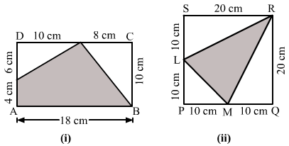

Question:1
Find the area of the rectangle whose dimensions are:
(i) length = 24.5 m, breadth = 18 m
(ii) length = 12.5 m, breadth - 8 dm.
Solution:
(i) Length = 24.5 m
Breadth = 18 m
∴ Area of the rectangle = Length Breadth
= 24.5 m 18 m
= 441 m2
(ii) Length = 12.5 m
Breadth = 8 dm = (8 10) = 80 cm = 0.8 m [since 1 dm = 10 cm and 1 m = 100 cm]
∴ Area of the rectangle = Length Breadth
= 12.5 m 0.8 m
= 10 m2
Question:2
Find the area of a rectangular plot, one side of which is 48 m and its diagonal is 50 m.
Solution:
We know that all the angles of a rectangle are 90° and the diagonal divides the rectangle into two right angled triangles.
So, 48 m will be one side of the triangle and the diagonal, which is 50 m, will be the hypotenuse.
According to the Pythagoras theorem:
(Hypotenuse)2 = (Base)2 + (Perpendicular)2
Perpendicular =
Perpendicular = m
∴ Other side of the rectangular plot = 14 m
Length = 48m
Breadth = 14m
∴ Area of the rectangular plot = 48 m 14 m = 672 m2
Hence, the area of a rectangular plot is 672 m2.
Question:3
The sides of a rectangular park are in the ratio 4 : 3. If its area is 1728 m2, find the cost of fencing it at Rs 30 per metre.
Solution:
Let the length of the field be 4x m.
Breadth = 3x m
∴ Area of the field = (4x 3x) m2 = 12x2 m2
But it is given that the area is 1728 m2.
∴ 12x2 = 1728
⇒ x2 = = 144
⇒ x = = 12
∴ Length = (4 12) m = 48 m
Breadth = (3 12) m =36 m
∴ Perimeter of the field = 2(l + b) units
= 2(48 + 36) m = (2 84) m = 168 m
∴ Cost of fencing = Rs (168 30) = Rs 5040
Question:4
The area of a rectangular field is 3584 m2 and its length is 64 m. A boy runs around the field at the rate of 6 km/h. How long will he take to go 5 times around it?
Solution:
Area of the rectangular field = 3584 m2
Length of the rectangular field = 64 m
Breadth of the rectangular field = = m = 56 m
Perimeter of the rectangular field = 2 (length + breadth)
= 2(64+ 56) m = (2 120) m = 240 m
Distance covered by the boy = 5 Perimeter of the rectangular field
= 5 240 = 1200 m
The boy walks at the rate of 6 km/hr.
or
Rate = m/min = 100 m/min.
∴ Required time to cover a distance of 1200 m = min = 12 min
Hence, the boy will take 12 minutes to go five times around the field.
Question:5
A verandah is 40 m long and 15 m broad. It is to be paved with stones, each measuring 6 dm by 5 dm. Find the number of stones required.
Solution:
Given:
Length of the verandah = 40 m = 400 dm [since 1 m = 10 dm ]
Breadth of the verandah = 15 m = 150 dm
∴ Area of the verandah= (400 150) dm2 = 60000 dm2
Length of a stone = 6 dm
Breadth of a stone = 5 dm
∴ Area of a stone = (6 5) dm2 = 30 dm2
∴ Total number of stones needed to pave the verandah =
= = 2000
Question:6
Find the cost of carpeting a room 13 m by 9 m with a carpet of width 75 cm at the rate of Rs 105 per metre.
Solution:
Area of the carpet = Area of the room
= (13 m 9 m) = 117 m2
Now, width of the carpet = 75 cm (given)
= 0.75 m [since 1 m = 100 cm]
Length of the carpet = = m = 156 m
Rate of carpeting = Rs 105 per m
∴ Total cost of carpeting = Rs (156 105) = Rs 16380
Hence, the total cost of carpeting the room is Rs 16380.
Question:7
The cost of carpeting a room 15 m long with a carpet of width 75 cm at Rs 80 per metre is Rs 19200. Find the width of the room.
Solution:
Given:
Length of the room = 15 m
Width of the carpet = 75 cm = 0.75 m (since 1 m = 100 cm)
Let the length of the carpet required for carpeting the room be x m.
Cost of the carpet = Rs. 80 per m
∴ Cost of x m carpet = Rs. (80 x) = Rs. (80x)
Cost of carpeting the room = Rs. 19200
∴ 80x = 19200 ⇒ x = = 240
Thus, the length of the carpet required for carpeting the room is 240 m.
Area of the carpet required for carpeting the room = Length of the carpet Width of the carpet
= ( 240 0.75) m2 = 180 m2
Let the width of the room be b m.
Area to be carpeted = 15 m b m = 15b m2
∴ 15b m2 = 180 m2
⇒ b = m = 12 m
Hence, the width of the room is 12 m.
Question:8
The length and breadth of a rectangular piece of land are in the ratio of 5 : 3. If the total cost of fencing it at Rs 24 per metre is Rs 9600, find its length and breadth.
Solution:
Total cost of fencing a rectangular piece = Rs. 9600
Rate of fencing = Rs. 24
∴ Perimeter of the rectangular field =
m =
m = 400 m
Let the length and breadth of the rectangular field be 5x and 3x, respectively.
Perimeter of the rectangular land = 2(5x + 3x) = 16x
But the perimeter of the given field is 400 m.
∴ 16x = 400
x = = 25
Length of the field = (5 25) m = 125 m
Breadth of the field = (3 25) m = 75 m
Question:9
Find the length of the largest pole that can be placed in a hall 10 m long, 10 m wide and 5 m high.
Solution:
Length of the diagonal of the room =
= m
= m
= m = 15 m
Hence, length of the largest pole that can be placed in the given hall is 15 m.
Question:10
Find the area of a square each of whose sides measures 8.5 m.
Solution:
Side of the square = 8.5 m
∴ Area of the square = (Side)2
= (8.5 m)2
= 72.25 m2
Question:11
Find the area of the square, the length of whose diagonal is
(i) 72 cm
(ii) 2.4 m
Solution:
(i) Diagonal of the square = 72 cm
∴ Area of the square = sq. unit
= cm2
= 2592 cm2
(ii)Diagonal of the square = 2.4 m
∴ Area of the square = sq. unit
= m2
= 2.88 m2
Question:12
The area of a square is 16200 m2. Find the length of its diagonal.
Solution:
We know:
Area of a square = sq. units
Diagonal of the square = units
= m = 180 m
∴ Length of the diagonal of the square = 180 m
Question:13
The area of a square field is hectare. Find the length of its diagonal in metres.
Solution:
Area of the square = sq. units
Given:
Area of the square field = hectare
= m2 = 5000 m2 [since 1 hectare = 10000 m2 ]
Diagonal of the square =
= m = 100 m
∴ Length of the diagonal of the square field = 100 m
Question:14
The area of a square plot is 6084 m2. Find the length of the wire which can go four times along the boundary of the plot.
Solution:
Area of the square plot = 6084 m2
Side of the square plot =
= m
= m = 78 m
∴ Perimeter of the square plot = 4 side = (4 78) m = 312 m
312 m wire is needed to go along the boundary of the square plot once.
Required length of the wire that can go four times along the boundary = 4 Perimeter of the square plot
= (4 312) m = 1248 m
Question:15
A wire is in the shape of a square of side 10 cm. If the wire is rebent into a rectangle of length 12 cm, find its breadth. Which figure encloses more area and by how much?
Solution:
Side of the square = 10 cm
Length of the wire = Perimeter of the square = 4 Side = 4 10 cm = 40 cm
Length of the rectangle (l) = 12 cm
Let b be the breadth of the rectangle.
Perimeter of the rectangle = Perimeter of the square
⇒ 2(l + b) = 40
⇒ 2(12 + b) = 40
⇒ 24 + 2b = 40
⇒ 2b = 40 - 24 = 16
⇒ b = cm = 8 cm
∴ Breadth of the rectangle = 8 cm
Now, Area of the square = (Side)2 = (10 cm 10 cm) = 100 cm2
Area of the rectangle = l b = (12 cm 8 cm) = 96 cm2
Hence, the square encloses more area.
It encloses 4 cm2 more area.
Question:16
A godown is 50 m long, 40 m broad and 10 m high. Find the cost of whitewashing its four walls and ceiling at Rs 20 per square metre.
Solution:
Given:
Length = 50 m
Breadth = 40 m
Height = 10 m
Area of the four walls = {2h(l + b)} sq. unit
= {2 10 (50 + 40)}m2
= {20 90} m2 = 1800 m2
Area of the ceiling = l b = (50 m 40 m) = 2000 m2
∴ Total area to be white washed = (1800 + 2000) m2 = 3800 m2
Rate of white washing = Rs 20/sq. metre
∴ Total cost of white washing = Rs (3800 20) = Rs 76000
Question:17
The area of the 4 walls of a room is 168 m2. The breadth and height of the room are 10 m and 4 m respectively. Find the length of the room.
Solution:
Let the length of the room be l m.
Given:
Breadth of the room = 10 m
Height of the room = 4 m
Area of the four walls = [2(l + b)h] sq units.
= 168 m2
∴ 168 = [2(l + 10) 4]
⇒ 168 = [8l + 80]
⇒ 168 - 80 = 8l
⇒ 88 = 8l
⇒ l = m = 11 m
∴ Length of the room = 11 m
Question:18
The area of the 4 walls of a room is 77 m2. The length and breadth of the room are 7.5 m and 3.5 m respectively. Find the height of the room.
Solution:
Given:
Length of the room = 7.5 m
Breadth of the room = 3.5 m
Area of the four walls = [2(l + b)h] sq. units.
= 77 m2
∴ 77 = [2(7.5 + 3.5)h]
⇒ 77 = [(2 11)h]
⇒ 77 = 22h
⇒ h = m = m = 3.5 m
∴ Height of the room = 3.5 m
Question:19
The area of four walls of a room is 120 m2. If the length of the room is twice its breadth and the height is 4 m, find the area of the floor.
Solution:
Let the breadth of the room be x m.
Length of the room = 2x m
Area of the four walls = {2(l + b) h} sq. units
120 m2 = {2(2x + x) 4} m2
⇒ 120 = {8 3x }
⇒ 120 = 24x
⇒ x = = 5
∴ Length of the room = 2x = (2 5) m = 10 m
Breadth of the room = x = 5 m
∴ Area of the floor = l b = (10 m 5 m) = 50 m2
Question:20
A room is 8.5 m long, 6.5 m broad and 3.4 m high. It has two doors, each measuring (1.5 m by 1 m) and two windows, each measuring (2 m by 1 m). Find the cost of painting its four walls at Rs 160 per m2.
Solution:
Length = 8.5 m
Breadth = 6.5 m
Height = 3.4 m
Area of the four walls = {2(l + b) h} sq. units
= {2(8.5 + 6.5) 3.4}m2 = {30 3.4} m2 = 102 m2
Area of one door = (1.5 1) m2 = 1.5 m2
∴ Area of two doors = (2 1.5) m2 = 3 m2
Area of one window = (2 1) m2 = 2 m2
∴ Area of two windows = (2 2) m2 = 4 m2
Total area of two doors and two windows = (3 + 4) m2
= 7 m2
Area to be painted = (102 - 7) m2 = 95 m2
Rate of painting = Rs 160 per m2
Total cost of painting = Rs (95 160) = Rs 15200
Question:21
A rectangular grassy plot is 75 m long and 60 m broad. If has path of width 2 m all around it on the inside. Find the area of the path and cost and of constructing it at Rs 125 per m2.
Solution:
Let PQRS be the given grassy plot and ABCD be the inside boundary of the path.
Length = 75 m
Breadth = 60 m
Area of the plot = (75 60) m2 = 4500 m2
Width of the path = 2 m
∴ AB = (75 - 2 2) m = (75 - 4) m =71 m
AD = (60 - 2 2) m = (60 - 4) m = 56 m
Area of rectangle ABCD = (71 x 56) m2 = 3976 m2
Area of the path = (Area of PQRS - Area of ABCD)
= (4500 - 3976) m2 = 524 m2
Rate of constructing the path = Rs 125 per m2
∴ Total cost of constructing the path = Rs (524 125) = Rs 65,500
Question:22
A rectangular plot of land measures 95 m by 72 m. Inside the plot, a path of uniform width of 3.5 m is to be constructed all around. The rest of the plot is to be laid with grass. Find the total expenses involved in constructing the path at Rs 80 per m2 and laying the grass at Rs 40 per m2.
Solution:
Let PQRS be the given rectangular plot and ABCD be the inside boundary of the path.
Length = 95 m
Breadth = 72 m
Area of the plot = (95 72) m2 = 6,840 m2
Width of the path = 3.5 m
∴ AB = (95 - 2 3.5) m = (95 - 7) m = 88 m
AD = (72 - 2 3.5) m = (72 - 7) m = 65 m
Area of the grassy rectangle plot ABCD = (88 65) m2 = 5,720 m2
Area of the path = (Area PQRS - Area ABCD)
= (6840 - 5720) m2 = 1,120 m2
Rate of constructing the path = Rs. 80 per m2
∴ Total cost of constructing the path = Rs. (1,120 80) = Rs. 89,600
Rate of laying the grass on the plot ABCD = Rs. 40 per m2
∴ Total cost of laying the grass on the plot = Rs. (5,720 40) = Rs. 2,28,800
∴ Total expenses involved = Rs. ( 89,600 + 2,28,800) = Rs. 3,18,400
Question:23
A saree is 5 m long and 1.3 m wide. A border of width 25 cm is printed along its sides. Find the cost of printing the border at Rs 1 per 10 cm2.
Solution:
Let ABCD be the saree and EFGH be the part of saree without border.
Length, AB= 5 m
Breadth, BC = 1.3 m
Width of the border of the saree = 25 cm = 0.25 m
∴ Area of ABCD = 5 m 1.3 m = 6.5 m2
Length, GH = {5 -( 0.25 + 0.25} m = 4.5 m
Breadth, FG = {1.3 - 0.25 + 0.25} m = 0.8 m
∴ Area of EFGH = 4.5 m .8 m = 3.6 m2
Area of the border = Area of ABCD − Area of EFGH
= 6.5 m2 − 3.6 m2
= 2.9 m2 = 29000 cm2 [since 1 m2 = 10000 cm2]
Rate of printing the border = Rs 1 per 10 cm2
∴ Total cost of printing the border = Rs
= Rs 2900
Question:24
A rectangular grassy lawn measuring 38 m by 25 m has been surrounded externally by a 2.5-m-wide path. Calculate the cost of gravelling the path at the rate of Rs 120 per m2.
Solution:
Length, EF = 38 m
Breadth, FG = 25 m
∴ Area of EFGH = 38 m 25 m = 950 m2
Length, AB = (38 + 2.5 + 2.5 ) m = 43 m
Breadth, BC = ( 25 + 2.5 + 2.5 ) m = 30 m
∴ Area of ABCD = 43 m 30 m = 1290 m2
Area of the path = Area of ABCD − Area of PQRS
= 1290 m2 − 950 m2
= 340 m2
Rate of gravelling the path = Rs 120 per m2
∴ Total cost of gravelling the path = Rs (120 340)
= Rs 40800
Question:25
A room 9.5 m long and 6 m wide is surrounded by a 1.25-m-long verandah. Calculate cost of cementing the floor of this verandah at Rs 80 per m2.
Solution:
Let EFGH denote the floor of the room.
The white region represents the floor of the 1.25 m verandah.
Length, EF = 9.5 m
Breadth, FG = 6 m
∴ Area of EFGH = 9.5 m 6 m = 57 m2
Length, AB = (9.5 + 1.25 + 1.25 ) m = 12 m
Breadth, BC = ( 6 + 1.25 + 1.25 ) m = 8.5 m
∴ Area of ABCD = 12 m 8.5 m = 102 m2
Area of the verandah = Area of ABCD − Area of EFGH
= 102 m2 − 57 m2
= 45 m2
Rate of cementing the verandah = Rs 80 per m2
∴ Total cost of cementing the verandah = Rs ( 80 45)
= Rs 3600
Question:26
Each side of a square flower bed is 2 m 80 cm long. It is extended by digging a strip 30 cm wide all around it. Find the area of the enlarged flower bed and also the increase in the area of the flower bed.
Solution:
Side of the flower bed = 2 m 80 cm = 2.80 m [since 100 cm = 1 m]
∴ Area of the square flower bed = (Side)2 = (2.80 m )2 = 7.84 m2
Side of the flower bed with the digging strip = 2.80 m + 30 cm + 30 cm
= (2.80 + 0.3 + 0.3) m = 3.4 m
Area of the enlarged flower bed with the digging strip = (Side )2 = (3.4 )2 = 11.56 m2
∴ Increase in the area of the flower bed = 11.56 m2 − 7.84 m2
= 3.72 m2
Question:27
The length and breadth of a park in the ratio 2 : 1 and its perimeter is 240 m. A path 2 m wide runs inside it, along its boundary. Find the cost of paving the path at Rs 80 per m2.
Solution:
Let the length and the breadth of the park be 2x m and x m, respectively.
Perimeter of the park = 2(2x + x) = 240 m
⇒ 2(2x + x) = 240
⇒ 6x = 240
⇒ x = m =40 m
∴ Length of the park = 2x = (2 40) = 80 m
Breadth = x = 40 m
Let PQRS be the given park and ABCD be the inside boundary of the path.
Length = 80 m
Breadth = 40 m
Area of the park = (80 40) m2 = 3200 m2
Width of the path = 2 m
∴ AB = (80 - 2 2) m = (80 - 4) m =76 m
AD = (40 - 2 2) m = (40 - 4) m = 36 m
Area of the rectangle ABCD = (76 36) m2 = 2736 m2
Area of the path = (Area of PQRS - Area of ABCD)
= (3200 - 2736) m2 = 464 m2
Rate of paving the path = Rs. 80 per m2
∴ Total cost of paving the path = Rs. (464 80) = Rs. 37,120
Question:28
A school has a hall which is 22 m long and 15.5 m broad. A carpet is laid inside the hall leaving all around a margin of 75 cm from the walls. Find the area of the carpet and the area of the strip left uncovered. If the width of the carpet is 82 cm, find its cost at the rate of Rs 60 per m.
Solution:
Length of the hall, PQ = 22 m
Breadth of the hall, QR = 15.5 m

∴ Area of the school hall PQRS = 22 m
15.5 m = 341 m
2
Length of the carpet, AB = 22 m − ( 0.75 m + 0.75 m) = 20.5 m [since 100 cm = 1 m]
Breadth of the carpet, BC = 15.5 m − ( 0.75 m + 0.75 m) = 14 m
∴ Area of the carpet ABCD = 20.5 m
14 m = 287 m
2
Area of the strip = Area of the school hall (PQRS) − Area of the carpet (ABCD)
= 341 m
2 − 287 m
2
= 54 m
2
Area of 1 m length of the carpet = 1 m
0.82 m = 0.82 m
2
∴ Length of the carpet
whose area is 287 m
2 = 287 m
2 ÷ 0.82 m
2 = 350 m
Cost of the 350 m long carpet = Rs 60
350 = Rs 21000
Question:29
A square lawn is surrounded by a path 2.5 m wide. If the area of the path is 165 m2, find the area of the lawn.
Solution:
Let ABCD be the square lawn and PQRS be the outer boundary of the square path.
Let a side of the lawn (AB) be x m.
Area of the square lawn = x2
Length, PQ = (x m + 2.5 m + 2.5 m) = (x + 5) m
∴ Area of PQRS = (x + 5)2 = (x2 + 10x + 25) m2
Area of the path = Area of PQRS − Area of the square lawn (ABCD)
⇒ 165 = x2 + 10x + 25 − x2
⇒ 165 = 10x + 25
⇒ 165 − 25 = 10x
⇒ 140 = 10x
∴ x = 140 ÷ 10 = 14
∴ Side of the lawn = 14 m
∴ Area of the lawn = (Side)2 = (14 m)2 = 196 m2
Question:30
The length and breadth of a rectangular park are in the ratio 5 : 2. A 2.5-m-wide path running all around the outside of the aprk has an area of 305 m2. Find the dimensions of the park.
Solution:
Area of the path = 305 m
2

Let the length of the park be 5
x m and the breadth of the park be 2
x m.
∴ Area of the rectangular park = 5
x 2
x = 10
x2 m
2
Width of the path = 2.5 m
Outer length,
PQ = 5
x m
+ 2.5 m + 2.5 m
= (5
x + 5) m
Outer breadth,
QR = 2
x + 2.5 m + 2.5 m
= (2
x + 5) m
Area of
PQRS = (5
x + 5)
(2
x + 5) = (10
x2 + 25
x + 10
x + 25) = (10
x2 + 35
x + 25) m
2
∴ Area of the path = [(10
x2 + 35
x + 25) − 10
x2 ] m
2
⇒ 305 = 35
x + 25
⇒ 305 − 25 = 35
x
⇒ 280 = 35
x
⇒
x = 280 ÷ 35 = 8
∴ Length of the park = 5
x = 5
8 = 40 m
Breadth of the park = 2
x = 2
8 = 16 m
Question:31
A rectangular lawn 70 m by 50 m has two roads, each 5 m wide, running through its middle, one parallel to its length and the other parallel to its breadth. Find the cost of constructing the roads at Rs 120 per m2.
Solution:
Let ABCD be the rectangular park.
Let EFGH and IJKL be the two rectangular roads with width 5 m.
Length of the rectangular park, AD = 70 m
Breadth of the rectangular park, CD = 50 m
∴ Area of the rectangular park = Length Breadth = 70 m 50 m = 3500 m2
Area of road EFGH = 70 m 5 m = 350 m2
Area of road IJKL = 50 m 5 m = 250 m2
Clearly, area of MNOP is common to both the two roads.
∴ Area of MNOP = 5 m 5 m = 25 m2
Area of the roads = Area (EFGH) + Area (IJKL) − Area (MNOP)
= (350 + 250 ) m2− 25 m2 = 575 m2
It is given that the cost of constructing the roads is Rs. 120/m2.
Cost of constructing 575 m2 area of the roads = Rs. (120 × 575)
= Rs. 69000
Question:32
A 115-m-long and 64-m-broad lawn has two roads at right angles, one 2 m wide, running parallel to its length, and the other 2.5 m wide, running parallel to its breadth. Find the cost of gravelling the roads at Rs 60 per m2.
Solution:
Let ABCD be the rectangular field and PQRS and KLMN be the two rectangular roads with width 2 m and 2.5 m, respectively.
Length of the rectangular field, CD = 115 cm
Breadth of the rectangular field, BC = 64 m
∴ Area of the rectangular lawn ABCD = 115 m 64 m = 7360 m2
Area of the road PQRS = 115 m 2 m = 230 m2
Area of the road KLMN = 64 m 2.5 m = 160 m2
Clearly, the area of EFGH is common to both the two roads.
∴ Area of EFGH = 2 m 2.5 m = 5 m2
∴ Area of the roads = Area (KLMN) + Area (PQRS) − Area (EFGH)
= (230 m2 + 160 m2) − 5 m2 = 385 m2
Rate of gravelling the roads = Rs 60 per m2
∴ Total cost of gravelling the roads = Rs (385 60)
= Rs 23,100
Question:33
A rectangular field is 50 m by 40 m. It has two roads through its centre, running parallel to its sides. The width of the longer and the shorter roads are 2 m and 2.5-m-respectively. Find the area of the roads and the area of the remaining portion of the field.
Solution:
Let ABCD be the rectangular field and KLMN and PQRS be the two rectangular roads with width 2.5 m and 2 m, respectively.
Length of the rectangular field CD = 50 cm
Breadth of the rectangular field BC = 40 m
∴ Area of the rectangular field ABCD = 50 m 40 m = 2000 m2
Area of road KLMN = 40 m 2.5 m = 100 m2
Area of road PQRS = 50 m 2 m = 100 m2
Clearly, area of EFGH is common to both the two roads.
∴ Area of EFGH = 2.5 m 2 m = 5 m2
∴ Area of the roads = Area (KLMN) + Area (PQRS) − Area (EFGH)
= (100 m2 + 100 m2) − 5 m2 = 195 m2
Area of the remaining portion of the field = Area of the rectangular field (ABCD) − Area of the roads
= (2000 − 195) m2
= 1805 m2
Question:34
Calculate the area of the shaded region in each of the figures given below:
Solution:
(i) Complete the rectangle as shown below:
Area of the shaded region = [Area of rectangle ABCD - Area of rectangle EFGH] sq. units
= [(43 m 27 m) - {(43 - 2 1.5) m x (27 - 1 2) m}]
= [(43 m 27 m) - {40 m 25 m}]
= 1161 m2 - 1000 m2
= 161 m2
(ii) Complete the rectangle as shown below:
Area of the shaded region = [Area of square ABCD - {(Area of EFGH) + (Area of IJKL) - (Area of MNOP)}] sq. units
= [(40 40) - {(40 2) + (40 3) - (2 3)}] m2
= [1600 - {(80 + 120 - 6)] m2
= [1600 - 194] m2
= 1406 m2
Question:35
Calculate the area of the shaded region in each of the figures given below.
Fig. (ii) has uniform width of 3 cm and it is given that AB = CD.
Solution:
(i) Complete the rectangle as shown below:
Area of the shaded region = [Area of rectangle ABCD - Area of rectangle EFGD] sq. units
= [(AB BC) - (DG GF)] m2
= [(24 m 19 m) - {(24 - 4) m 16.5 m} ]
= [(24 m 19 m) - (20 m 16.5) m]
= (456 - 330) m2 = 126 m2
(ii) Complete the rectangle by drawing lines as shown below:
Area of the shaded region ={(12 3) + (12 3) + (5 3) + {(15 - 3 - 3) 3)} cm2
= { 36 + 36 + 15 + 27} cm2
= 114 cm2
Question:36
In the given figure, all steps are 0.5 m high. Find the area of the shaded region.
Solution:
Divide the given figure in four parts shown below:
Given:
Width of each part = 0.5 m
Now, we have to find the length of each part.
Length of part I = 3.5 m
Length of part II = (3.5 - 0.5 - 0.5) m = 2.5 m
Length of part III = (2.5 - 0.5 - 0.5) = 1.5 m
Length of part IV = (1.5 - 0.5 - 0.5) = 0.5 m
∴ Area of the shaded region = [Area of part (I) + Area of part (II) + Area of part (III) + Area of part (IV)] sq. units
= [(3.5 0.5) + (2.5 0.5) + ( 1.5 0.5) + (0.5 0.5)] m2
= [1.75 + 1.25 + 0.75 + 0.25] m2
= 4 m2
Question:37
Find the area of a parallelogram with base 32 cm and height 16.5 cm.
Solution:
Base = 32 cm
Height = 16.5 cm
∴ Area of the parallelogram = Base Height
= 32 cm 16.5 cm
= 528 cm2
Question:38
The base of a parallelogram measures 1 m 60 cm and its height is 75 cm. Find its area in m2.
Solution:
Base = 1 m 60 cm = 1.6 m [since 100 cm = 1 m]
Height = 75 cm = 0.75 m
∴ Area of the parallelogram = Base Height
= 1.6 m 0.75 m
= 1.2 m2
Question:39
In a parallelogram it is being given that base = 14 dm and height = 6.5 dm. Find its area in
(i) cm2.
(ii) m2.
Solution:
(i) Base = 14 dm = (14 10) cm = 140 cm [since 1 dm = 10 cm]
Height = 6.5 dm = (6.5 10) cm = 65 cm
Area of the parallelogram = Base Height
= 140 cm 65 cm
= 9100 cm2
(ii) Base = 14 dm = (14 10) cm [since 1 dm = 10 cm and 100 cm = 1 m]
= 140 cm = 1.4 m
Height = 6.5 dm = (6.5 10) cm
= 65 cm = 0.65 m
∴ Area of the parallelogram = Base Height
= 1.4 m 0.65 m
= 0.91 m2
Question:40
Find the height of a parallelogram whose area is 54 cm2 and the base is 15 cm.
Solution:
Area of the given parallelogram = 54 cm2
Base of the given parallelogram = 15 cm
∴ Height of the given parallelogram = = cm = 3.6 cm
Question:41
One side of a parallelogram is 18 cm long and its area is 153 cm2. Find the distance of the given side from its opposite side.
Solution:
Base of the parallelogram = 18 cm
Area of the parallelogram = 153 cm2
∴ Area of the parallelogram = Base Height
⇒ Height = = cm = 8.5 cm
Hence, the distance of the given side from its opposite side is 8.5 cm.
Question:42
In a parallelogram ABCD, AB = 18 cm, BC = 12 cm. AL ⊥ DC and AM ⊥ BC.
If AL = 6.4 cm, find the length of AM.
Solution:
Base, AB = 18 cm
Height, AL = 6.4 cm
∴ Area of the parallelogram ABCD = Base Height
= (18 cm 6.4 cm) = 115.2 cm2 ... (i)
Now, taking BC as the base:
Area of the parallelogram ABCD = Base Height
= (12 cm AM) ... (ii)
From equation (i) and (ii):
12 cm AM = 115.2 cm2
⇒ AM = cm
= 9.6 cm
Question:43
The adjacent sides of a parallelogram are 15 cm and 8 cm. If the distance between the longer sides is 4 cm, find the distance between the shorter sides.
Solution:
ABCD is a parallelogram with side AB of length 15 cm and the corresponding altitude AE of length 4 cm.
The adjacent side AD is of length 8 cm and the corresponding altitude is CF.
Area of a parallelogram = Base × Height
We have two altitudes and two corresponding bases.
∴ AD CF = AB AE
⇒ 8 cm CF = 15 cm 4 cm
⇒ CF = cm = cm = 7.5 cm
Hence, the distance between the shorter sides is 7.5 cm.
Question:44
The height of a parallelogram is one-third of its base. If the area of the parallelogram is 108 cm2, find its base and height.
Solution:
Let the base of the parallelogram be x cm.
Then, the height of the parallelogram will be x cm.
It is given that the area of the parallelogram is 108 cm2.
Area of a parallelogram = Base Height
∴ 108 cm2 = x x
108 cm2 = x2
⇒ x2 = (108 3) cm2 = 324 cm2
⇒ x2 = (18 cm)2
⇒ x = 18 cm
∴ Base = x = 18 cm
Height = x = cm
= 6 cm
Question:45
The base of a parallelogram is twice its height. If the area of the parallelogram is 512 cm2. find the base and the height.
Solution:
Let the height of the parallelogram be x cm.
Then, the base of the parallelogram will be 2x cm.
It is given that the area of the parallelogram is 512 cm2.
Area of a parallelogram = Base Height
∴ 512 cm2 = 2x x
512 cm2 = 2x2
⇒ x2 = cm2 = 256 cm2
⇒ x2 = (16 cm)2
⇒ x = 16 cm
∴ Base = 2x = 2 16
= 32 cm
Height = x = 16 cm
Question:46
Find the area of a rhombus in which
(i) each side = 12 cm and height = 7.5 cm.
(ii) each side = 2 dm and height = 12.6 cm.
Solution:
A rhombus is a special type of a parallelogram.
The area of a parallelogram is given by the product of its base and height.
∴ Area of the given rhombus = Base × Height
(i) Area of the rhombus = 12 cm 7.5 cm = 90 cm2
(ii) Base = 2 dm = (2 10) = 20 cm [since 1 dm = 10 cm]
Height = 12.6 cm
∴ Area of the rhombus = 20 cm 12.6 cm = 252 cm2
Question:47
Find the area of a rhombus, the lengths of whose diagonals are:
(i) 16 cm and 28 cm,
(ii) 8 dm 5 cm and 5 dm 6 cm.
Solution:
(i)
Length of one diagonal = 16 cm
Length of the other diagonal = 28 cm
∴ Area of the rhombus = (Product of the diagonals)
= cm2 = 224 cm2
(ii)
Length of one diagonal = 8 dm 5 cm = (8 10 + 5) cm = 85 cm [since 1 dm = 10 cm]
Length of the other diagonal = 5 dm 6 cm = (5 10 + 6) cm = 56 cm
∴ Area of the rhombus = (Product of the diagonals)
= cm2
= 2380 cm2
Question:48
Find the area of a rhombus each side of which measures 20 cm and one of whose diagoanls is 24 cm.
Solution:
Let ABCD be the rhombus, whose diagonals intersect at O.
AB = 20 cm and AC = 24 cm
The diagonals of a rhombus bisect each other at right angles.
Therefore, ΔAOB is a right angled triangle, right angled at O.
Here, OA = = 12 cm
AB = 20 cm
By Pythagoras theorem:
(AB)2 = (OA)2 + (OB)2
⇒ (20)2 = (12)2 + (OB)2
⇒ (OB)2 = (20)2 − (12)2
⇒ (OB)2 = 400 − 144 = 256
⇒ (OB)2 = (16)2
⇒ OB = 16 cm
∴ BD = 2 OB = 2 16 cm = 32 cm
∴ Area of the rhombus ABCD = cm2
= cm2
= 384 cm2
Question:49
The area of a rhombus is 148.8 cm2. If one of its diagonals is 19.2 cm, find the length of the other diagonal.
Solution:
Area of a rhombus = (Product of the diagonals)
Given:
Length of one diagonal = 19.2 cm
Area of the rhombus = 148.8 cm2
∴ Length of the other diagonal = cm = 15.5 cm
Question:50
The area of a rhombus is 119 cm2 and its perimeter is 56 cm. Find its height.
Solution:
Perimeter of the rhombus = 56 cm
Area of the rhombus = 119 cm2
Side of the rhombus = = cm = 14 cm
Area of a rhombus = Base Height
∴ Height of the rhombus = = cm
= 8.5 cm
Question:51
The area of a rhombus is 441 cm2 and its height is 17.5 cm. Find the length of each side of the rhombus.
Solution:
Given:
Height of the rhombus = 17.5 cm
Area of the rhombus = 441 cm2
We know:
Area of a rhombus = Base Height
∴ Base of the rhombus = = cm = 25.2 cm
Hence, each side of a rhombus is 25.2 cm.
Question:52
The area of a rhombus is equal to the area of a triangle whose base and the corresponding height are 24.8 cm and 16.5 cm respectively. If one of the diagonals of the rhombus is 22 cm, find the lenght of the other diagonal.
Solution:
Area of a triangle = Base Height
= cm2 = 204.6 cm2
Given:
Area of the rhombus = Area of the triangle
Area of the rhombus = 204.6 cm2
Area of the rhombus = (Product of the diagonals)
Given:
Length of one diagonal = 22 cm
∴ Length of the other diagonal = cm
= 18.6 cm
Question:53
Find the area of the triangle in which
(i) base = 42 cm and height = 25 cm,
(ii) base = 16.8 m and height = 75 cm,
(iii) base = 8 dm and height = 35 cm,
Solution:
We know:
Area of a triangle =
(i) Base = 42 cm
Height = 25 cm
∴ Area of the triangle = cm2 = 525 cm2
(ii) Base = 16.8 m
Height = 75 cm = 0.75 m [since 100 cm = 1 m]
∴ Area of the triangle = m2 = 6.3 m2
(iii) Base = 8 dm = (8 10) cm = 80 cm [since 1 dm = 10 cm]
Height = 35 cm
∴ Area of the triangle = cm2 = 1400 cm2
Question:54
Find the height of a triangle having an area of 72 cm2 and base 16 cm.
Solution:
Height of a triangle =
Here, base = 16 cm and area = 72 cm2
∴ Height = cm = 9 cm
Question:55
Find the height of a triangle region having an area of 224 m2 and base 28 m.
Solution:
Height of a triangle =
Here, base = 28 m and area = 224 m2
∴ Height = m = 16 m
Question:56
Find the base of a triangle whose are is 90 cm2 and height 12 cm.
Solution:
Base of a triangle =
Here, height = 12 cm and area = 90 cm2
∴ Base = cm = 15 cm
Question:57
The base of a triangular field is three times its height. If the cost of cultivating the field at Rs 1080 per hectare is Rs 14580, find its base and height.
Solution:
Total cost of cultivating the field = Rs. 14580
Rate of cultivating the field = Rs. 1080 per hectare
Area of the field =
hectare
=
hectare
= 13.5 hectare
= (13.5
10000) m
2 = 135000 m
2 [since 1 hectare = 10000 m
2 ]
Let the height of the field be
x m.
Then, its base will be 3
x m.
Area of the field =
m
2 =
m
2
∴
= 135000
⇒
⇒
x =
= 300
∴ Base = (3
300) = 900 m
Height = 300 m
Question:58
The area of right triangular region is 129.5 cm2. If one of the sides containing the right angle is 14.8 cm, find the other one.
Solution:
Let the length of the other leg be h cm.
Then, area of the triangle = cm2 = (7.4 h) cm2
But it is given that the area of the triangle is 129.5 cm2.
∴ 7.4h = 129.5
⇒ h = = 17.5 cm
∴ Length of the other leg = 17.5 cm
Question:59
Find the area of a right triangle whose base is 1.2 m and hypotenuse 3.7 m.
Solution:
Here, base = 1.2 m and hypotenuse = 3.7 m
In the right angled triangle:
Perpendicular =
Area = sq. units
= m2
∴ Area of the right angled triangle = 2.1 m2
Question:60
The legs of a right triangle are in the ratio 3 : 4 and its area is 1014 cm2. Find the lengths of its legs.
Solution:
In a right angled triangle, if one leg is the base, then the other leg is the height.
Let the given legs be 3x and 4x, respectively.
Area of the triangle = cm2
⇒ 1014 = (6x2)
⇒ 1014 = 6x2
⇒ x2 = = 169
⇒ x = = 13
∴ Base = (3 13) = 39 cm
Height = (4 13) = 52 cm
Question:61
One side of a right-angled triangular scarf is 80 cm and its longest side is 1 m. Find its cost at the rate of Rs 250 per m2.
Solution:
Consider a right-angled triangular scarf (ABC).
Here, ∠B= 90°
BC = 80 cm
AC = 1 m = 100 cm
Now, AB2 + BC2 = AC2
⇒ AB2 = AC2 - BC2 = (100)2 - (80)2
= (10000 - 6400) = 3600
⇒ AB = = 60 cm
Area of the scarf ABC = sq. units
= cm2
= 2400 cm2 = 0.24 m2 [since 1 m2 = 10000 cm2]
Rate of the cloth = Rs 250 per m2
∴ Total cost of the scarf = Rs (250 0.24) = Rs 60
Hence, cost of the right angled scarf is Rs 60.
Question:62
Find the area of an equilateral triangle each of whose sides measures (i) 18 cm, (ii) 20 cm.
[Take = 1.73]
Solution:
(i) Side of the equilateral triangle = 18 cm
Area of the equilateral triangle = sq. units
= cm2 = cm2
= (1.73 81) cm2 = 140.13 cm2
(ii) Side of the equilateral triangle = 20 cm
Area of the equilateral triangle = sq. units
= cm2 = cm2
= (1.73 100) cm2 = 173 cm2
Question:63
The area of an equilateral triangle is . Find the length of each side the triangle.
Solution:
It is given that the area of an equilateral triangle is cm2.
We know:
Area of an equilateral triangle = sq. units
∴ Side of the equilateral triangle = cm
= cm = cm = cm = 8 cm
Hence, the length of the equilateral triangle is 8 cm.
Question:64
Find the length of the height of an equilateral triangle of side 24 cm. (Take =1.73)
Solution:
Let the height of the triangle be h cm.
Area of the triangle = sq. units
= cm2
Let the side of the equilateral triangle be a cm.
Area of the equilateral triangle = sq. units
= cm2 = cm2
∴ =
⇒ 12 h =
⇒ h = cm
∴ Height of the equilateral triangle = 20.76 cm
Question:65
Find the area of the triangle in which
(i) a = 13 m, b = 14 m, c = 15m:
(ii) a = 52 m, b = 56 cm, c = 60 cm:
(iii) a = 91 m, b = 98 m, c = 105 m.
Solution:
(i) Let a = 13 m, b = 14 m and c = 15 m
s = = m = 21 m
∴ Area of the triangle = sq. units
= m2
= m2
= m2
= (2 2 3 7) m2
= 84 m2
(ii) Let a = 52 cm, b = 56 cm and c = 60 cm
s = = cm = 84 cm
∴ Area of the triangle = sq. units
= cm2
= cm2
= cm2
= cm2
= (2 2 2 2 2 2 3 3 7) m2
= 1344 cm2
(iii) Let a = 91 m, b = 98 m and c = 105 m
s = = m = 147 m
∴ Area of the triangle = sq. units
= m2
= m2
= m2
= m2
= ( 2 2 3 7 7 7) m2
= 4116 m2
Question:66
The lengths of the sides of a triangle are 33 cm, 44 cm and 55 respectively. Find the area of the triangle and hence find the height corresponding to the side measuring 44 cm.
Solution:
Let a = 33 cm, b = 44 cm and c = 55 cm
Then, s = = cm = cm = 66 cm
∴ Area of the triangle = sq. units
= cm2
= cm2
= cm2
= (6 11 11) cm2 = 726 cm2
Let the height on the side measuring 44 cm be h cm.
Then, Area =
⇒ 726 cm2 =
⇒ h = cm = 33 cm.
∴ Area of the triangle = 726 cm2
Height corresponding to the side measuring 44 cm = 33 cm
Question:67
The sides of a triangle are in the ratio 13 : 14 : 15 and its perimeter is 84 cm. Find the area of the triangle.
Solution:
Let a = 13x cm, b = 14x cm and c = 15x cm
Perimeter of the triangle = 13x + 14x + 15x = 84 (given)
⇒ 42x = 84
⇒ x =
∴ a = 26 cm , b = 28 cm and c = 30 cm
s = = cm = cm = 42 cm
∴ Area of the triangle = sq. units
= cm2
= cm2
= cm2
= (2 4 6 7) cm2 = 336 cm2
Hence, area of the given triangle is 336 cm2.
Question:68
The sides of a triangle are 42 cm, 34 cm and 20 cm. Calculate its area and the length of the height on the longest side.
Solution:
Let a = 42 cm, b = 34 cm and c = 20 cm
Then, s = = cm = cm = 48 cm
∴ Area of the triangle = sq. units
= cm2
= cm2
= cm2
= (2 2 6 14) cm2 = 336 cm2
Let the height on the side measuring 42 cm be h cm.
Then, Area =
⇒ 336 cm2 =
⇒ h = cm = 16 cm
∴ Area of the triangle = 336 cm2
Height corresponding to the side measuring 42 cm = 16 cm
Question:69
The base of an isosceles triangle is 48 cm and one of its equal sides is 30 cm. Find the area of the triangle.
Solution:
Let each of the equal sides be a cm.
b = 48 cm
a = 30 cm
Area of the triangle = sq. units
= cm2 = cm2
= cm2 = cm2 = (24 18) cm2 = 432 cm2
∴ Area of the triangle = 432 cm2
Question:70
The base of an isosceles triangle is 12 cm and its perimeter is 32 cm. Find its area.
Solution:
Let each of the equal sides be a cm.
a + a + 12 = 32 ⇒ 2a = 20 ⇒ a = 10
∴ b = 12 cm and a = 10 cm
Area of the triangle = sq. units
= cm2 = cm2
= cm2 = (6 8) cm2
= 48 cm2
Question:71
A diagonal of a quadrilateral is 26 cm and the perpendiculars drawn to it from the opposite vertices are 12.8 cm and 11.2 cm. Find the area of the quadrilateral.
Solution:
We have:
AC = 26 cm, DL = 12.8 cm and BM = 11.2 cm
Area of ΔADC = AC DL
= 26 cm 12.8 cm = 166.4 cm2
Area of ΔABC = AC BM
= 26 cm 11.2 cm = 145.6 cm2
∴ Area of the quadrilateral ABCD = Area of ΔADC + Area of ΔABC
= (166.4 + 145.6) cm2
= 312 cm2
Question:72
In a quadrilateral ABCD, AB = 28 cm, BC = 26 cm, CD = 50 cm, DA = 40 cm and diagonal AC = 30 cm. Find the area of the quadrilateral.
Solution:
First, we have to find the area of ΔABC and ΔACD.
For ΔACD:
Let a = 30 cm, b = 40 cm and c = 50 cm
s = cm
∴ Area of triangle ACD = sq. units
= cm2
= cm2
= cm2
= 600 cm2
For ΔABC:
Let a = 26 cm, b = 28 cm and c = 30 cm
s = cm
∴ Area of triangle ABC = sq. units
= cm2
= cm2
= cm2
= (2 2 2 2 3 7) cm2
= 336 cm2
∴ Area of the given quadrilateral ABCD = Area of ΔACD + Area of ΔABC
= (600 + 336) cm2 = 936 cm2
Question:73
In the given figure, ABCD is a rectangle with length = 36 m and breadth = 24 m. In ADE, EF ⊥ AD and EF = 15 m. Calculate the area of the shaded region.
Solution:
Area of the rectangle = AB BC
= 36 m 24 m
= 864 m2
Area of the triangle = AD FE
= BC FE [since AD = BC]
= 24 m 15 m
= 12 m 15 m = 180 m2
∴ Area of the shaded region = Area of the rectangle − Area of the triangle
= (864 − 180) m2
= 684 m2
Question:74
In the given figure, ABCD is a rectangle in which AB = 40 cm and BC = 25 cm. If P,Q,R.S be the midpoints of AB, BC, CD and DA respectively, find the area of the shaded region.
Solution:
Join points PR and SQ.
These two lines bisect each other at point O.
Here, AB = DC = SQ = 40 cm
AD = BC =RP = 25 cm
Also, OP = OR = = 12.5 cm
From the figure we observe:
Area of ΔSPQ = Area of ΔSRQ
∴ Area of the shaded region = 2 (Area of ΔSPQ)
= 2 ( SQ OP)
= 2 ( 40 cm 12.5 cm)
= 500 cm2
Question:75
In the following figures, find the area of the shaded region.

Solution:
(i) Area of rectangle ABCD = (10 cm x 18 cm) = 180 cm
2
Area of triangle I =
cm
2 = 30 cm
2
Area of triangle II =
cm
2 = 40 cm
2
∴ Area of the shaded region = {180 - ( 30 + 40)} cm
2 = { 180 - 70}cm
2 = 110 cm
2
(ii) Area of square ABCD = (Side)
2 = (20 cm)
2 = 400 cm
2
.jpg)
Area of triangle I =
cm
2 = 100 cm
2
Area of triangle II =
cm
2 = 50 cm
2
Area of triangle III =
cm
2 = 100 cm
2
∴ Area of the shaded region = {400 - ( 100 + 50 + 100)} cm
2 = { 400 - 250}cm
2 = 150 cm
2
Question:76
Find the area of quadrilateral ABCD in which diagonal BD = 24 cm. AL ⊥ BD and CM ⊥ BD such that AL = 5 cm and CM = 8 cm.
Solution:
Let ABCD be the given quadrilateral and let BD be the diagonal such that BD is of the length 24 cm.
Let AL ⊥ BD and CM ⊥ BD
Then, AL = 5 cm and CM = 8 cm
Area of the quadrilateral ABCD = (Area of ΔABD + Area of ΔCBD)
= sq. units
= cm2
= ( 60 + 96) cm2 = 156 cm2
∴ Area of the given quadrilateral = 156 cm
Question:77
Find the circumference of a circle of radius 15 cm. (Take π = 3.14.)
Solution:
Here, r = 15 cm
∴ Circumference =
= ( 2 3.14 15) cm
= 94.2 cm
Hence, the circumference of the given circle is 94.2 cm
Question:78
Find the circumference of a circle whose radius is
(i) 28 cm.
(ii) 1.4 m.
Solution:
(i) Here, r = 28 cm
∴ Circumference = 2π r
= cm
= 176 cm
Hence, the circumference of the given circle is 176 cm.
(ii) Here, r = 1.4 m
∴ Circumference = 2π r
= m
= m = 8.8 m
Hence, the circumference of the given circle is 8.8 m.
Question:79
Find the circumference of a circle whose diameter is
(i) 35 cm.
(ii) 4.9 m.
Solution:
(i) Here, d = 35 cm
Circumference = 2π r
= [since 2r = d]
= cm = (22 5) = 110 cm
Hence, the circumference of the given circle is 110 cm.
(ii) Here, d = 4.9 m
Circumference =2π r
= [since 2r = d]
= m = (22 0.7) = 15.4 m
Hence, the circumference of the given circle is 15.4 m.
Question:80
Find the radius of a circle whose circumference is 57.2 cm.
Solution:
Circumference of the given circle = 57.2 cm
∴ C = 57.2 cm
Let the radius of the given circle be r cm.
C =
⇒ r = cm
⇒ r = cm = 9.1 cm
Thus, radius of the given circle is 9.1 cm.
Question:81
Find the diameter of a circle whose circumference is 63.8 m.
Solution:
Circumference of the given circle = 63.8 m
∴ C = 63.8 m
Let the radius of the given circle be r cm.
C =
⇒ r =
⇒ r = m =10.15 m
∴ Diameter of the given circle = 2r = (2 10.15) m = 20.3 m
Question:82
The circumference of a circle exceeds its diameter by 30 cm. Find the radius of the circle.
Solution:
Let the radius of the given circle be r cm.
Then, its circumference =
Given:
(Circumference) - (Diameter) = 30 cm
∴ ( - 2r ) = 30
⇒
⇒
⇒
⇒
∴ Radius of the given circle = 7 cm
Question:83
The ratio of the radii of two circle is 5 : 3. Find the ratio of their circumferences.
Solution:
Let the radii of the given circles be 5x and 3x, respectively.
Let their circumferences be C1 and C2, respectively.
C1 =
C2 =
∴
⇒ C1:C2 = 5:3
Hence, the ratio of the circumference of the given circle is 5:3.
Question:84
How long will a man take to make a round of a circular field of radius 21 m, cycling at the speed of 8 km/h?
Solution:
Radius of the circular field, r = 21 m.
Distance covered by the cyclist = Circumference of the circular field
=
= m = 132 m
Speed of the cyclist = 8 km per hour = =
Time taken by the cyclist to cover the field =
=
=
= 59.4 s
Question:85
A racetrack is in the form of a ring whose inner circumference is 528 m and the outer circumference is 616 m. Find the width of the track.
Solution:
Let the inner and outer radii of the track be r metres and R metres, respectively.
Then, = 528
= 616
⇒
⇒ r =
R =
⇒ (R - r) = (98 - 84) m = 14 m
Hence, the width of the track is 14 m.
Question:86
The inner circumference of a circular track is 330 m. The track is 10.5 m wide everywhere. Calculate the cost of putting up a fence along the outer circle at the rate of Rs 20 per metre.
Solution:
Let the inner and outer radii of the track be r metres and (r + 10.5) metres, respectively.
Inner circumference = 330 m
∴ ⇒
⇒ r =
Inner radius of the track = 52.5 m
∴ Outer radii of the track = (52.5 + 10.5) m = 63 m
∴ Circumference of the outer circle =
Rate of fencing = Rs. 20 per metre
∴ Total cost of fencing the outer circle = Rs. (396 20) = Rs. 7920
Question:87
One circle has radius of 98 cm and a second concentric circle has a radius of 1 m 26 cm. How much longer is the circumference of the second circle than that of the first?
Solution:
We know that the concentric circles are circles that form within each other, around a common centre point.
Radius of the inner circle, r = 98 cm
∴ Circumference of the inner circle =
= cm = 616 cm
Radius of the outer circle, R = 1 m 26 cm = 126 cm [since 1 m = 100 cm]
∴ Circumference of the outer circle =
= cm = 792 cm
∴ Difference in the lengths of the circumference of the circles = (792 - 616) cm = 176 cm
Hence, the circumference of the second circle is 176 cm larger than that of the first circle.
Question:88
A piece of wire is bent in the shape of an equilateral triangle each of whose sides measures 8.8 cm. This wire is rebent to form a circular ring. What is the diameter of the ring?
Solution:
Length of the wire = Perimeter of the equilateral triangle
= 3 Side of the equilateral triangle = (3 8.8) cm = 26.4 cm
Let the wire be bent into the form of a circle of radius r cm.
Circumference of the circle = 26.4 cm
⇒
⇒
⇒ r = cm = 4.2 cm
∴ Diameter = 2r = (2 × 4.2) cm = 8.4 cm
Hence, the diameter of the ring is 8.4 cm.
Question:89
A rhombus has the same perimeter as the circumference of a circle. If each side of the rhombus measures 33 cm, find the radius of the circle.
Solution:
Circumference of the circle = Perimeter of the rhombus
= 4 × Side of the rhombus = (4 × 33) cm = 132 cm
∴ Circumference of the circle = 132 cm
⇒
⇒
⇒ r = cm = 21 cm
Hence, the radius of the circle is 21 cm.
Question:90
A wire in the form of a rectangle 18.7 cm long and 14.3 cm wide is reshaped and bent into the form of a circle. Find the radius of the circle so formed.
Solution:
Length of the wire = Perimeter of the rectangle
= 2(l + b) = 2 × (18.7 + 14.3) cm = 66 cm
Let the wire be bent into the form of a circle of radius r cm.
Circumference of the circle = 66 cm
⇒
⇒
⇒ r = cm = 10.5 cm
Hence, the radius of the circle formed is 10.5 cm.
Question:91
A wire is looped in the form of a circle of radius 35 cm. If it is rebent in the form of a square, what will be the length of each side of the square?
Solution:
It is given that the radius of the circle is 35 cm.
Length of the wire = Circumference of the circle
⇒ Circumference of the circle = = cm = 220 cm
Let the wire be bent into the form of a square of side a cm.
Perimeter of the square = 220 cm
⇒ 4a = 220
⇒ a = cm = 55 cm
Hence, each side of the square will be 55 cm.
Question:92
The hour and minute hands of a clock are 4.2 cm and 7 cm long respectively. Find the sum of the distances covered by their tips in 1 day.
Solution:
Length of the hour hand (r)= 4.2 cm.
Distance covered by the hour hand in 12 hours = = cm = 26.4 cm
∴ Distance covered by the hour hand in 24 hours = (2 × 26.4) = 52.8 cm
Length of the minute hand (R)= 7 cm
Distance covered by the minute hand in 1 hour = = cm = 44 cm
∴ Distance covered by the minute hand in 24 hours = (44 × 24) cm = 1056 cm
∴ Sum of the distances covered by the tips of both the hands in 1 day = (52.8 + 1056) cm
= 1108.8 cm
Question:93
A well of diameter 140 cm has a stone parapet around it. If the lenght of the outer edge of the parapet is 616 cm, find the width of the parapet.
Solution:
Given:
Diameter of the well (d) = 140 cm.
Radius of the well (r) = cm = 70 cm
Let the radius of the outer circle (including the stone parapet) be R cm.
Length of the outer edge of the parapet = 616 cm
⇒
⇒
⇒ R = cm = 98 cm
Now, width of the parapet = {Radius of the outer circle (including the stone parapet) - Radius of the well}
= {98 -70} cm = 28 cm
Hence, the width of the parapet is 28 cm.
Question:94
Find the distance covered by the wheel of a bus in 2000 rotations if the diameter of the wheel is 98 cm.
Solution:
It may be noted that in one rotation, the bus covers a distance equal to the circumference of the wheel.
Now, diameter of the wheel = 98 cm
∴ Circumference of the wheel = = cm = 308 cm
Thus, the bus travels 308 cm in one rotation.
∴ Distance covered by the bus in 2000 rotations = (308 × 2000) cm
= 616000 cm
= 6160 m [since 1 m = 100 cm]
Question:95
The diameter of the wheel of a cycle is 70 cm. How far will it go in 250 revolutions?
Solution:
It may be noted that in one revolution, the cycle covers a distance equal to the circumference of the wheel.
Diameter of the wheel = 70 cm
∴ Circumference of the wheel = = cm = 220 cm
Thus, the cycle covers 220 cm in one revolution.
∴ Distance covered by the cycle in 250 revolutions = (220 × 250) cm
= 55000 cm
= 550 m [since 1 m = 100 cm]
Hence, the cycle will cover 550 m in 250 revolutions.
Question:96
The diameter of the wheel of a car is 77 cm. How many revolutions will it make to travel 121 km?
Solution:
Diameter of the wheel = 77 cm
⇒ Radius of the wheel = cm
Circumference of the wheel =
= cm = (22 × 11) cm = 242 cm
= m = m
Distance covered by the wheel in 1 revolution = m
Now, m is covered by the car in 1 revolution.
(121 × 1000) m will be covered by the car in revolutions, i.e. 50000 revolutions.
∴ Required number of revolutions = 50000
Question:97
A bicycle wheel makes 5000 revolutions in moving 11 km. Find the circumference and the diameter of the wheel.
Solution:
It may be noted that in one revolution, the bicycle covers a distance equal to the circumference of the wheel.
Total distance covered by the bicycle in 5000 revolutions = 11 km
⇒ 5000 × Circumference of the wheel = 11000 m [since 1 km = 1000 m]
Circumference of the wheel = m =2.2 m = 220 cm [since 1 m = 100 cm]
Circumference of the wheel =
⇒ 220 cm =
⇒ Diameter of the wheel = cm = 70 cm
Hence, the circumference of the wheel is 220 cm and its diameter is 70 cm.
Question:98
Find the area of a circle whose radius is
(i) 21 cm.
(ii) 3.5 m.
Solution:
(i) Given:
r = 21 cm
∴ Area of the circle = sq. units
= cm2 = cm2 = 1386 cm2
(ii) Given:
r = 3.5 m
Area of the circle = sq. units
= m2 = m2 = 38.5 m2
Question:99
Find the area of a circle whose diameter is
(i) 28 cm.
(ii) 1.4 m.
Solution:
(i) Given:
d = 28 cm ⇒ r = = cm = 14 cm
Area of the circle = sq. units
= cm2 = cm2 = 616 cm2
(ii) Given:
r = 1.4 m ⇒ r = = m = 0.7 m
Area of the circle = sq. units
= m2 = m2 = 1.54 m2
Question:100
The circumference of a circle is 264 cm. Find its area.
Solution:
Let the radius of the circle be r cm.
Circumference = cm
∴ = 264
⇒
⇒ r = = 42
∴ Area of the circle =
= cm2
= 5544 cm2
Question:101
The circumference of a circle is 35.2 m. Find its area.
Solution:
Let the radius of the circle be r m.
Then, its circumference will be m.
∴ = 35.2
⇒
⇒ r = = 5.6
∴ Area of the circle =
= m2 = 98.56 m2
Question:102
The area of a circle is 616 cm2. Find its circumference.
Solution:
Let the radius of the circle be r cm.
Then, its area will be cm2.
∴ = 616
⇒ = 616
⇒ r2 = = 196
⇒ r = = 14
⇒ Circumference of the circle = cm
= cm = 88 cm
Question:103
The area of a circle is 1381 m2. Find its circumference.
Solution:
Let the radius of the circle be r m.
Then, area = m2
∴ = 1386
⇒ = 1386
⇒ r2 = = 441
⇒ r = = 21
⇒ Circumference of the circle = m
= m = 132 m
Question:104
The ratio of the radii of two circles is 4 : 5. Find the ratio of their areas.
Solution:
Let r1 and r2 be the radii of the two given circles and A1 and A2 be their respective areas.
∴
Hence, the ratio of the areas of the given circles is 16:25.
Question:105
A horse is tied to a pole in a park with a string 21 m long. Find the area over which the horse can graze.
Solution:
If the horse is tied to a pole, then the pole will be the central point and the area over which the horse will graze will be a circle. The string by which the horse is tied will be the radius of the circle.
Thus,
Radius of the circle (r) = Length of the string = 21 m
Now, area of the circle = = m2 = 1386 m2
∴ Required area = 1386 m2
Question:106
A steel wire when bent in the form of a square encloses an area of 121 cm2. The same wire is bent in the form of a circle. find the area of the circle.
Solution:
Let a be one side of the square.
Area of the square = 121 cm2 (given)
⇒ a2 = 121
⇒ a = 11 cm (since 11 × 11 = 121)
Perimeter of the square = 4 × side = 4a = (4 × 11) cm = 44 cm
Length of the wire = Perimeter of the square
= 44 cm
The wire is bent in the form of a circle.
Circumference of a circle = Length of the wire
∴ Circumference of a circle = 44 cm
⇒
⇒
⇒ r = = 7 cm
∴ Area of the circle =
= cm2
= 154 cm2
Question:107
A wire in a circular shape of radius 28 cm. If it is bent in the form of a square, what will be the area of the square formed?
Solution:
It is given that the radius of the circle is 28 cm.
Length of the wire = Circumference of the circle
⇒ Circumference of the circle = cm = 176 cm
Let the wire be bent into the form of a square of side a cm.
Perimeter of the square = 176 cm
⇒ 4a = 176
⇒ a = cm = 44 cm
Thus, each side of the square is 44 cm.
Area of the square = (Side)2 = (a)2 = (44 cm)2
= 1936 cm2
∴ Required area of the square formed = 1936 cm2
Question:108
A rectangular sheet of acrylic is 34 cm by 24 cm. From it, 64 circular buttons, each of diameter 3.5 cm, have been cut out. Find the area of the remaining sheet.
Solution:
Area of the acrylic sheet = 34 cm × 24 cm = 816 cm2
Given that the diameter of a circular button is 3.5 cm.
∴ Radius of the circular button (r)= cm = 1.75 cm
∴ Area of 1 circular button =
= cm2
= 9.625 cm2
∴ Area of 64 such buttons = (64 × 9.625) cm2 = 616 cm2
Area of the remaining acrylic sheet = (Area of the acrylic sheet - Area of 64 circular buttons)
= (816 - 616) cm2 = 200 cm2
Question:109
A rectangular ground is 90 m long and 32 m broad. In the middle of the ground there is a circular tank of radius 14 metres. Find the cost of turfing the remaining portion at the rate of Rs 50 per square metre.
Solution:
Area of the rectangular ground = 90 m × 32 m = (90 × 32) m2 = 2880 m2
Given:
Radius of the circular tank (r) = 14 m
∴ Area covered by the circular tank = = m2
= 616 m2
∴ Remaining portion of the rectangular ground for turfing = (Area of the rectangular ground - Area covered by the circular tank)
= (2880 - 616) m2 = 2264 m2
Rate of turfing = Rs 50 per sq. metre
∴ Total cost of turfing the remaining ground = Rs (50 × 2264) = Rs 1,13,200
Question:110
In the given figure, four equal circles are described about the four corners of a square so that each circle touches two of the circle as shown in the figure. find the area of the shaded region, each side of the square measuring 14 cm.
Solution:
Area of each of the four quadrants is equal to each other with radius 7 cm.
Area of the square ABCD = (Side)2 = (14 cm)2 = 196 cm2
Sum of the areas of the four quadrants = cm2
= 154 cm2
∴ Area of the shaded portion = Area of square ABCD - Areas of the four quadrants
= (196 - 154) cm2
= 42 cm2
Question:111
A horse is tethered to one corner of a rectangular field, 60 m by 40 m, by a rope 14 m long. On how much area can the horse graze?
Solution:
Let ABCD be the rectangular field.
Here, AB = 60 m
BC = 40 m
Let the horse be tethered to corner A by a 14 m long rope.
Then, it can graze through a quadrant of a circle of radius 14 m.
∴ Required area of the field = m2 = 154 m2
Hence, horse can graze 154 m2 area of the rectangular field.
Question:112
In the given figure, a circle of diameter 21 cm is given. Inside this circle, two circles with diameters and of the diameter of the big circle have been drawn, as shown in the given figure. Find the area of the shaded region.
Solution:
Diameter of the big circle = 21 cm
Radius = cm = 10.5 cm
∴ Area of the bigger circle = = cm2
= 346.5 cm2
Diameter of circle I = of the diameter of the bigger circle
= of 21 cm = cm = 14 cm
Radius of circle I (r1) = cm = 7 cm
∴ Area of circle I = = cm2
= 154 cm2
Diameter of circle II = of the diameter of the bigger circle
= of 21 cm = cm = 7 cm
Radius of circle II (r2) = cm = 3.5 cm
∴ Area of circle II = = cm2
= 38.5 cm2
∴ Area of the shaded portion = {Area of the bigger circle - (Sum of the areas of circle I and II)}
= {346.5 - (154 + 38.5)} cm2
= {346.5 - 192.5} cm2
= 154 cm2
Hence, the area of the shaded portion is 154 cm2
Question:113
In the given figure a rectangular plot of land measures 8 m by 6 m. In each of the corners, there is a flower bed in the form of a quadrant of a circle of radius 2 m. Also, there is a flower bed in the area of the remaining plot.
Solution:
Let ABCD be the rectangular plot of land that measures 8 m by 6 m.
∴ Area of the plot = (8 m × 6 m) = 48 m2
Area of the four flower beds = m2 = m2
Area of the circular flower bed in the middle of the plot =
= m2 = m2
Area of the remaining part = m2
= m2
= m2 = m2 = 22.86 m2
∴ Required area of the remaining plot = 22.86 m2
Question:114
The length of a rectangle is 16 cm and the length of its diagonal is 20 cm. The area of the rectangle is
(a) 320 cm2
(b) 160 cm2
(c) 192 cm2
(d) 156 cm2
Solution:
(c) 192 cm2
Let ABCD be the rectangular plot.
Then, AB = 16 cm
AC = 20 cm
Let BC = x cm
From right triangle ABC:
AC2 = AB2 + BC2
⇒ (20)2 = (16)2 + x2
⇒ x2 = (20)2 - (16)2 ⇒ {400 - 256} = 144
⇒ x = = 12
∴ BC = 12 cm
∴ Area of the plot = (16 × 12) cm2 = 192 cm2
Question:115
Each diagonal of a square is 12 cm long. Its area is
(a) 144 cm2
(b) 72 cm2
(c) 36 cm2
(d) none of these
Solution:
(b) 72 cm2
Given:
Diagonal of the square = 12 cm
∴ Area of the square = sq. units.
= cm2
= 72 cm2
Question:116
The area of a square is 200 cm2. The length of its diagonal is
(a) 10 cm
(b) 20 cm
(c) cm
(d) 14.1 cm
Solution:
(b) 20 cm
Area of the square = sq. units.
Area of the square field = 200 cm2
Diagonal of a square =
= cm = cm = 20 cm
∴ Length of the diagonal of the square = 20 cm
Question:117
The area of a square field is 0.5 hectare. The length of its diagonal is
(a) 100 m
(b) 50 m
(c) 250 m
(d) cm
Solution:
(a) 100 m
Area of the square = sq. units.
Given:
Area of square field = 0.5 hectare
= m2 [since 1 hectare = 10000 m2]
= 5000 m2
Diagonal of a square =
= m = 100 m
Hence, the length of the diagonal of a square field is 100 m.
Question:118
The length of a rectangular field is thrice its breadth and its perimeter is 240 m. The length of the field is
(a) 80 m
(b) 120 m
(c) 90 m
(d) none of these
Solution:
(c) 90 m
Let the breadth of the rectangular field be x m.
Length = 3x m
Perimeter of the rectangular field = 2(l + b)
⇒ 240 = 2( x + 3x)
⇒ 240 = 2(4x)
⇒ 240 = 8x ⇒ x =
∴ Length of the field = 3x = (3 × 30) m = 90 m
Question:119
On increasing each side of a square by 25% , the increase in area will be
(a) 25%
(b) 55%
(c) 40.5%
(d) 56.25%
Solution:
(d) 56.25%
Let the side of the square be a cm.
Area of the square = (a)2 cm2
Increased side = (a + 25% of a) cm
= cm = cm
Area of the square = cm2
Increase in the area = cm2= cm2 = cm2
% increase in the area =
= =
Question:120
The area of a square and that of a square drawn on its diagonal are in the ratio
(a)
(b) 1 : 2
(c) 1 : 3
(d) 1 : 4
Solution:
(b) 1:2
Let the side of the square be a.
Length of its diagonal =
∴ Required ratio =
Question:121
The perimeters of a square and a rectangle are equal. If their areas be A m2 and B m2, then which of the following is a true statement?
(a) A < B
(b) A ≤ B
(c) A > B
(d) A ≥ B
Solution:
(c) A > B
We know that a square encloses more area even though its perimeter is the same as that of the rectangle.
∴ Area of a square > Area of a rectangle
Question:122
The length and breadth of a rectangular field are in the ratio 5 : 3 and its perimeter is 480 m. The area of the field is
(a) 7200 m2
(b) 13500 m2
(c) 15000 m2
(d) 54000 m2
Solution:
(b) 13500 m2
Let the length of the rectangular field be 5x.
Breadth = 3x
Perimeter of the field = 2(l + b) = 480 m (given)
⇒ 480 = 2(5x + 3x) ⇒ 480 = 16x
⇒ x = = 30
∴ Length = 5x = (5 × 30) = 150 m
Breadth = 3x = (3 × 30) = 90 m
∴ Area of the rectangular park = 150 m × 90 m = 13500 m2
Question:123
The length of a room is 15 m. The cost of carpeting it with a carpet 75 cm wide at Rs 50 per metre is Rs 6000. The width of the room is
(a) 6 m
(b) 8 m
(c) 13.4 m
(d) 18 m
Solution:
(a) 6 m
Total cost of carpeting = Rs 6000
Rate of carpeting = Rs 50 per m
∴ Length of the carpet = m = 120 m
∴ Area of the carpet = m2 = 90 m2 [since 75 cm = ]
Area of the floor = Area of the carpet = 90 m2
∴ Width of the room =
Question:124
The sides of a triangle measure 13 cm, 14 cm and 15 cm. Its area is
(a) 84 cm2
(b) 91 cm2
(c) 168 cm2
(d) 182 cm2
Solution:
(a) 84 cm2
Let a = 13 cm, b = 14 cm and c = 15 cm
Then, s = = cm = 21 cm
∴ Area of the triangle = sq. units
= cm2
= cm2
= cm2
= (2 × 2 × 3 × 7) cm2
= 84 cm2
Question:125
The base and height of a triangle are 12 m and 8 m respectively. Its area is
(a) 96 m2
(b) 48 m2
(c) m2
(d) m2
Solution:
(b) 48 m2
Base = 12 m
Height = 8 m
Area of the triangle = sq. units
= m2
= 48 m2
Question:126
The area of an equilateral triangle is cm2. The length of each of its sides is
(a) 3 cm
(b) 4 cm
(c)
(d) cm
Solution:
(b) 4 cm
Area of the equilateral triangle = cm2
We know:
Area of an equilateral triangle = sq. units
∴ Side of the equilateral triangle = cm
= cm = cm = cm = 4 cm
Question:127
Each side of an equilateral triangle is 8 cm long. Its area is
(a) 32 cm2
(b) 64 cm2
(c) cm2
(d) cm2
Solution:
(c) cm2
It is given that one side of an equilateral triangle is 8 cm.
∴ Area of the equilateral triangle = sq. units
= cm2
= cm2 = cm2
Question:128
The height of an equilateral triangle is cm. Its area is
(a) cm2
(b) cm2
(c) cm2
(d) cm2
Solution:
(b) cm2
Let ΔABC be an equilateral triangle with one side of the length a cm.
Diagonal of an equilateral triangle = cm
⇒
⇒ a = cm
Area of the equilateral triangle =
= cm2 = cm2 = cm2
Question:129
One side of a parallelogram is 16 cm and the distance of this side from the opposite side is 4.5 cm. The area of the parallelogram is
(a) 36 cm2
(b) 72 cm2
(c) 18 cm2
(d) 54 cm2
Solution:
(b) 72 cm2
Base of the parallelogram = 16 cm
Height of the parallelogram = 4.5 cm
∴ Area of the parallelogram = Base × Height
= (16 × 4.5) cm2 = 72 cm2
Question:130
The lengths of the diagonals of a rhombus are 24 cm and 18 cm respectively. Its area is
(a) 432 cm2
(b) 216 cm2
(c) 108 cm2
(d) 144 cm2
Solution:
(b) 216 cm2
Length of one diagonal = 24 cm
Length of the other diagonal = 18 cm
∴ Area of the rhombus = × (Product of the diagonals)
= cm2 = 216 cm2
Question:131
The difference between the circumference and radius of a circle is 37 cm. The area of the circle is
(a) 111 cm2
(b) 148 cm2
(c) 154 cm2
(d) 259 cm2
Solution:
(c) 154 cm2
Let the radius of the circle be r cm.
Circumference =
(Circumference) - (Radius) = 37
∴
⇒
⇒ r = =
∴ Radius of the given circle is 7 cm.
∴ Area = = cm2 = 154 cm2
Question:132
The perimeter of the floor of a room is 18 m and its height is 3 m. What is the area of 4 walls of the room?
(a) 21 m2
(b) 42 m2
(c) 54 m2
(d) 108 m2
Solution:
(c) 54 m2
Given:
Perimeter of the floor = 2(l + b) = 18 m
Height of the room = 3 m
∴ Area of the four walls = {2(l + b) × h}
= Perimeter × Height
= 18 m × 3 m = 54 m2
Question:133
How many metres of carpet 63 cm wide will be required to cover the floor of a room 14 m by 9 m?
(a) 200 m
(b) 210 m
(c) 220 m
(d) 185 m
Solution:
(a) 200 m
Area of the floor of a room = 14 m × 9 m = 126 m2
Width of the carpet = 63 cm = 0.63 m (since 100 cm = 1 m)
∴ Required length of the carpet =
=
Question:134
If the diagonal of a rectangle is 17 cm long and its perimeter is 46 cm, the area of the rectangle is
(a) 100 cm2
(b) 110 cm2
(c) 120 cm2
(d) 150 cm2
Solution:
(c) 120 cm2
Let the length of the rectangle be x cm and the breadth be y cm.
Area of the rectangle = xy cm2
Perimeter of the rectangle = 2( x + y) = 46 cm (given)
⇒ 2( x + y) = 46
⇒ ( x + y) = cm = 23 cm
Diagonal of the rectangle = = 17 cm
⇒ = 17
Squaring both the sides, we get:
⇒ x2 + y2 = (17)2
⇒ x2 + y2 = 289
Now, (x2 + y2) = ( x + y)2 - 2xy
⇒ 2xy = ( x + y)2 - (x2 + y2)
= (23)2 - 289
= 529 - 289 = 240
∴ xy = cm2 = 120 cm2
Question:135
If the ratio of the areas of two squares is 9 : 1, then the ratio of their perimeters is
(a) 2 : 1
(b) 3 : 1
(c) 3 : 2
(d) 4 : 1
Solution:
(b) 3:1
Let a side of the first square be a cm and that of the second square be b cm.
Then, their areas will be a2 and b2, respectively.
Their perimeters will be 4a and 4b, respectively.
According to the question:
⇒ ⇒
∴ Required ratio of the perimeters = = 3:1
Question:136
The ratio of the areas of two squares, one having its diagonal double that of the other, is
(a) 2 : 1
(b) 3 : 1
(c) 3 : 2
(d) 4 : 1
Solution:
(d) 4:1
Let the diagonals be 2d and d.
Area of the square = sq. units
Required ratio =
Question:137
The area of a rectangle 144 m long is the same as that of a square of side 84 m. The width of the rectangle is
(a) 7 m
(b) 14 m
(c) 49 m
(d) none of these
Solution:
(c) 49 m
Let the width of the rectangle be x m.
Given:
Area of the rectangle = Area of the square
⇒ Length × Width = Side × Side
⇒ (144 × x) = 84 × 84
∴ Width (x) = m = 49 m
Hence, width of the rectangle is 49 m.
Question:138
The ratio of the area of a square of side a and that of an equilateral triangle of side a, is
(a) 2 : 1
(b)
(c) 4 : 3
(d)
Solution:
(d)
Let one side of the square and that of an equilateral triangle be the same, i.e. a units.
Then, Area of the square = (Side)2 = (a)2
Area of the equilateral triangle = =
∴ Required ratio =
Question:139
The area of a square is equal to the area of a circle. What is the ratio between the side of the square and the radius of the circle?
(a)
(b)
(c)
(d)
Solution:
(a)
Let the side of the square be x cm and the radius of the circle be r cm.
Area of the square = Area of the circle
⇒ (x)2 =
∴ Side of the square (x) =
Required ratio =
=
Question:140
Each side of an equilateral triangle is equal to the radius of a circle whose area is 154 cm2. The area of the triangle is
(a)
(b)
(c)
(d)
Solution:
(b)
Let the radius of the circle be r cm.
Then, its area = cm2
∴ = 154
⇒
⇒ r2 = = 49
⇒ r = cm = 7 cm
Side of the equilateral triangle = Radius of the circle
= 7 cm
∴ Area of the equilateral triangle = sq. units
= cm2
= cm2
Question:141
The area of a rhombus is 36 cm2 and the length of one of its diagonals is 6 cm. The length of the second diagonal is
(a) 6 cm
(b) cm
(c) 12 cm
(d) none of these
Solution:
(c) 12 cm
Area of the rhombus = × (Product of the diagonals)
Given:
Length of one diagonal = 6 cm
Area of the rhombus = 36 cm2
∴ Length of the other diagonal = cm = 12 cm
Question:142
The area of a rhombus is 144 cm2 and one of its diagonals is double the other. The length of the longer diagonal is
(a) 12 cm
(b) 16 cm
(c) 18 cm
(d) 24 cm
Solution:
(d) 24 cm
Let the length of the shorter diagonal of the rhombus be x cm.
∴ Longer diagonal = 2x
Area of the rhombus = × (Product of its diagonals)
⇒ 144 =
⇒ 144 = =
∴ x = cm = 12 cm
∴ Length of the longer diagonal = 2x
= (2 × 12) cm
= 24 cm
Question:143
The area of a circle is 24.64 m2. The circumference of the circle is
(a) 14.64 m
(b) 16.36 m
(c) 17.60 m
(d) 18.40 m
Solution:
(c) 17.60 m
Let the radius of the circle be r m.
Area = m2
∴ = 24.64
⇒ = 24.64
⇒ r2 = = 7.84
⇒ r = = 2.8 m
⇒ Circumference of the circle = m
= m = 17.60 m
Question:144
The area of a circle is increased by 22 cm2 when its radius is increased by 1 cm. The original radius of the circle is
(a) 6 cm
(b) 3.2 cm
(c) 3 cm
(d) 3.5 cm
Solution:
(c) 3 cm
Suppose the radius of the original circle is r cm.
Area of the original circle =
Radius of the circle = (r +1) cm
According to the question:
⇒
⇒
⇒ [cancel from both the sides of the equation]
⇒
⇒
⇒ 2r = 7 -1 = 6
∴ r = cm = 3 cm
∴ Original radius of the circle = 3 cm
Question:145
The radius of a circular wheel is 1.75 m. How many revolutions will it make in travelling 11 km?
(a) 10
(b) 100
(c) 1000
(d) 10000
Solution:
(c) 1000
Radius of the wheel = 1.75 m
Circumference of the wheel =
= cm = (2 × 22 × 0.25) m = 11 m
Distance covered by the wheel in 1 revolution is 11 m.
Now, 11 m is covered by the car in 1 revolution.
(11 × 1000) m will be covered by the car in revolutions, i.e. 1000 revolutions.
∴ Required number of revolutions = 1000
Question:146
Find the area of a rectangular plot on side of which is 48 m and its diagonal 50 m.
Solution:
We know that all the angles of a rectangle are 90° and the diagonal divides the rectangle into two right angled triangles.
So, one side of the triangle will be 48 m and the diagonal, which is 50 m, will be the hypotenuse.
According to Pythagoras theorem:
(Hypotenuse)2 = (Base)2 + (Perpendicular)2
Perpendicular =
Perpendicular = m
∴ Other side of the rectangular plot = 14 m
∴ Area of the rectangular plot = 48 m × 14 m = 672 m2
Hence, the area of a rectangular plot is 672 m2.
Question:147
A room is 9 m by 8 m by 6.5 m. It has one door of dimensions (2 m × 1.5 m) and four windows each of dimensions (1.5 m × 1 m). Find the cost of painting the walls at Rs 50 per m2.
Solution:
Length = 9 m
Breadth = 8 m
Height = 6.5 m
Area of the four walls = {2(l + b) × h} sq. units
= {2(9 + 8) × 6.5} m2 = {34 × 6.5} m2 = 221 m2
Area of one door = (2 × 1.5) m2 = 3 m2
Area of one window = (1.5 × 1) m2 = 1.5 m2
∴ Area of four windows = (4 × 1.5) m2 = 6 m2
Total area of one door and four windows = (3 + 6) m2
= 9 m2
Area to be painted = (221 - 9) m2 = 212 m2
Rate of painting = Rs 50 per m2
Total cost of painting = Rs ( 212 × 50) = Rs 10600
Question:148
Find the area of a square, the length of whose diagonal is 64 cm.
Solution:
Given that the diagonal of a square is 64 cm.
Area of the square = sq. units.
= cm2 = cm2 = 2048 cm2
∴ Area of the square = 2048 cm2
Question:149
A square lawn has a 2-m-wide path surrounding it. If the area of the path is 136 m2, find the area of the lawn.
Solution:
Let ABCD be the square lawn and PQRS be the outer boundary of the square path.
Let one side of the lawn (AB) be x m.
Area of the square lawn = x2
Length PQ = (x m + 2 m + 2 m) = (x + 4) m
∴ Area of PQRS = (x + 4)2 = (x2 + 8x + 16) m2
Now, Area of the path = Area of PQRS − Area of the square lawn
⇒ 136 = x2 + 8x + 16 − x2
⇒ 136 = 8x + 16
⇒ 136 − 16 = 8x
⇒ 120 = 8x
∴ x = 120 ÷ 8 = 15
∴ Side of the lawn = 15 m
∴ Area of the lawn = (Side)2 = (15 m)2 = 225 m2
Question:150
A rectangular lawn is 30 m by 20 m. It has two roads each 2 m wide running in the middle of it, one parallel to the length and the other parallel to the breadth. Find the area of the roads.
Solution:
Let ABCD be the rectangular park.
EFGH and IJKL are the two rectangular roads with width 2 m.
Length of the rectangular park AD = 30 cm
Breadth of the rectangular park CD = 20 cm
Area of the road EFGH = 30 m × 2 m = 60 m2
Area of the road IJKL = 20 m × 2 m = 40 m2
Clearly, area of MNOP is common to the two roads.
∴ Area of MNOP = 2 m × 2 m = 4 m2
∴ Area of the roads = Area (EFGH) + Area (IJKL) − Area (MNOP)
= (60 + 40 ) m2 − 4 m2 = 96 m2
Question:151
Find the area of a rhombus having each side equal to 13 cm and one of the diagonals equal to 24 cm.
Solution:
Let ABCD be the rhombus whose diagonals intersect at O.
Then, AB = 13 cm
AC = 24 cm
The diagonals of a rhombus bisect each other at right angles.
Therefore, ΔAOB is a right-angled triangle, right angled at O, such that:
OA = AC = 12 cm
AB = 13 cm
By Pythagoras theorem:
(AB)2 = (OA)2 + (OB)2
⇒ (13)2 = (12)2 + (OB)2
⇒ (OB)2 = (13)2 − (12)2
⇒ (OB)2 = 169 − 144 = 25
⇒ (OB)2 = (25)2
⇒ OB = 5 cm
∴ BD = 2 × OB = 2 × 5 cm = 10 cm
∴ Area of the rhombus ABCD = × AC × BD cm2
= cm2 = 120 cm2
Question:152
The area of a parallelogram is 3385 m2. If its altitude is twice the corresponding base, find the base and the altitude.
Solution:
Let the base of the parallelogram be x m.
Then, the altitude of the parallelogram will be 2x m.
It is given that the area of the parallelogram is 338 m2.
Area of a parallelogram = Base × Altitude
∴ 338 m2 = x × 2x
338 m2 = 2x2
⇒ x2 = m2 = 169 m2
⇒ x2 = 169 m2
⇒ x = 13 m
∴ Base = x m = 13 m
Altitude = 2x m = (2 × 13)m = 26 m
Question:153
Find the area of a right triangle having base = 24 cm and hypotenuse = 25 cm.
Solution:
Consider ΔABC.
Here, ∠B = 90°
AB = 24 cm
AC = 25 cm
Now, AB2 + BC2 = AC2
⇒ BC2 = AC2 - AB2
= (252 - 242)
= (625 - 576)
= 49
⇒ BC = cm = 7 cm
Area of ΔABC = sq. units
= cm2 = 84 cm2
Hence, area of the right angled triangle is 84 cm2.
Question:154
The radius of the wheel of a car is 35 cm. How many revolutions will it make to travel 33 km?
Solution:
Radius of the wheel = 35 cm
Circumference of the wheel =
= cm = (44 × 5) cm = 220 cm
= m = m
Distance covered by the wheel in 1 revolution = m
Now, m is covered by the car in 1 revolution.
Thus, (33 × 1000) m will be covered by the car in revolutions, i.e. 15000 revolutions.
∴ Required number of revolutions = 15000
Question:155
Find the radius of a circle whose area is 616 cm2.
Solution:
Let the radius of the circle be r cm.
∴ Area = cm2
∴ = 616
⇒ = 616
⇒ r2 = = 196
⇒ r = = 14 cm
Hence, the radius of the given circle is 14 cm.
Question:156
Mark () against the correct answer
The area of a circle is 154 cm2. Its diameter is
(a) 14 cm
(b) 11 cm
(c) 7 cm
(d) 22 cm
Solution:
(a) 14 cm
Let the radius of the circle be r cm.
Then, its area will be cm2.
∴ = 154
⇒ = 154
⇒ r2 = = 49
⇒ r = = 7 cm
∴ Diameter of the circle = 2r = (2 × 7) cm = 14 cm
Question:157
Mark () against the correct answer
The circumference of a circle is 44 cm. Its area is
(a) 308 cm2
(b) 154 cm2
(c) 77 cm2
(d) 616 cm2
Solution:
(b) 154 cm2
Let the radius of the circle be r cm.
Circumference = cm
∴ = 44
⇒
⇒ r = = 7 cm
∴ Area of the circle =
= cm2 = 154 cm2
Question:158
Mark () against the correct answer
Each diagonal of a square is 14 cm long. Its area is
(a) 196 cm2
(b) 88 cm2
(c) 98 cm2
(d) 147 cm2
Solution:
(c) 98 cm2
Given that the diagonal of a square is 14 cm.
Area of a square = sq. units.
= cm2 = cm2 = 98 cm2
Hence, area of the square is 98 cm2.
Question:159
Mark () against the correct answer
The area of a square is 50 cm2. The length of its diagonal is
(a) cm
(b) 10 cm
(c) cm
(d) 8 cm
Solution:
(b) 10 cm
Given that the area of the square is 50 cm2.
We know:
Area of a square = sq. units
∴ Diagonal of the square = = cm = cm = 10 cm
Hence, the diagonal of the square is 10 cm.
Question:160
Mark () against the correct answer
The length and breadth of a rectangular park are in the ratio 4 : 3 and its perimeter is 56 m. The area of the field is
(a) 192 m2
(b) 300 m2
(c) 432 m2
(d) 228 m2
Solution:
(a) 192 m2
Let the length of the rectangular park be 4x.
∴ Breadth = 3x
Perimeter of the park = 2(l + b) = 56 m (given)
⇒ 56 = 2(4x + 3x)
⇒ 56 = 14x
⇒ x = = 4
Length = 4x = (4 × 4) = 16 m
Breadth = 3x = (3 × 4) = 12 m
∴ Area of the rectangular park = 16 m × 12 m = 192 m2
Question:161
Mark () against the correct answer
The sides of triangle are 13 cm, 14 cm and 15 cm. The area of the triangle is
(a) 84 cm2
(b) 91 cm2
(c) 105 cm2
(d) 97.5 cm2
Solution:
(a) 84 cm2
Let a = 13 cm, b = 14 cm and c = 15 cm
s = = cm = 21 cm
∴ Area of the triangle = sq. units
= cm2
= cm2
= cm2
= (2 × 2 × 3 × 7) cm2 = 84 cm2
Question:162
Mark () against the correct answer
Each side of an equilateral triangle is 8 cm. Its area is
(a)
(b)
(c)
(d)
Solution:
(a)
Given that each side of an equilateral triangle is 8 cm.
∴ Area of the equilateral triangle = sq. units
= cm2
= cm2 = cm2
Question:163
Mark () against the correct answer
One side of a parallelogram is 14 cm and the distance of this side from the opposite side is 6.5 cm. The area of the parallelogram is
(a) 45.5 cm2
(b) 91 cm2
(c) 182 cm2
(d) 190 cm2
Solution:
(b) 91 cm2
Base = 14 cm
Height = 6.5 cm
∴ Area of the parallelogram = Base × Height
= (14 × 6.5) cm2
= 91 cm2
Question:164
Mark () against the correct answer
The lengths of the diagonals of a rhombus are 18 cm and 15 cm. The area of the rhombus is
(a) 270 cm2
(b) 135 cm2
(c) 90 cm2
(d) 180 cm2
Solution:
(b) 135 cm2
Area of the rhombus = × (Product of the diagonals)
= cm2 = 135 cm2
Hence, the area of the rhombus is 135 cm2.
Question:165
Fill in the blanks.
(i) If d1 and d2 be the diagonals of a rhombus, then its are is (......) sq units.
(ii) If l,b and h be the length, breadth and height respectively of a room, then area of its 4 walls = (......) sq units.
(iii) 1 hectare = (......) m2.
(iv) 1 are = ......m2.
(v) If each side of a triangle is a cm, then its area = ...... cm2.
Solution:
(i) If d1 and d2 be the diagonals of a rhombus, then its area is sq. units.
Area of a rhombus = × (Product of its diagonals)
(ii) If l, b and h are the length, breadth and height respectively of a room, then area of its 4 walls = 2h(l + b) sq. units.
(iii) 1 hectare = (10000) m2
(since 1 hectometre = 100 m)
∴1 hectare = (100 × 100) m2
(iv) 1 acre = 100 m2
(v) If each side of a triangle is a cm, then its area = cm2.
Area of equilateral triangle with side a = sq. units.
Question:166
Write 'T' for true and 'F' for false
(i) Area of a triangle = (base × height)
(ii) Area of a || gm = (base × height)
(iii) Area of a circle =
(iv) Circumference of a circle =
Solution:
(i) F
Area of a triangle =
(ii) T
Area of a parallelogram = Base × Height
(iii) F
Area of a circle =
(iv) T
Circumference of a circle = 2πr2